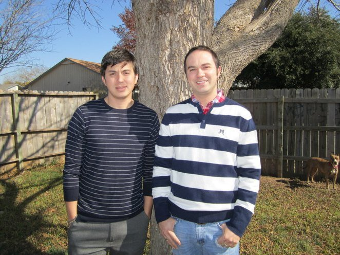

About Me
My name is Matthew Fort and I was born and raised on the Coastal Bend. I grew up in the small town of Rockport, TX and could often be found either playing sports or fishing with my friends.
I graduated from Rockport-Fulton High School in 2005 and enrolled in school at Texas A&M University (after a short stint at UTSA).
I graduated from Texas A&M in 2009 with a BS in Political Science and immediately moved to Austin, TX. I worked a few jobs here and there but currently work at a software company called ShipStation as a Technical Project Manager.